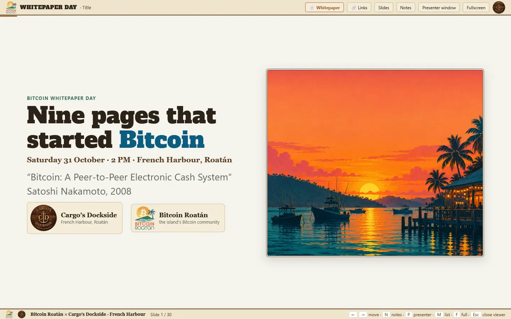
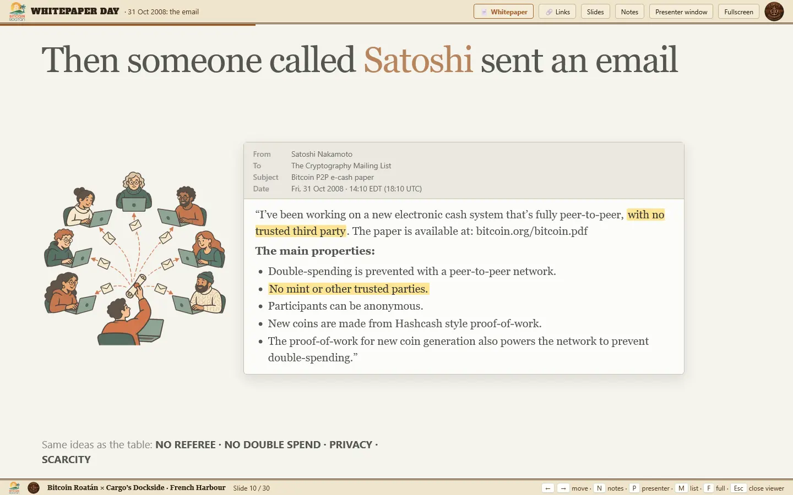
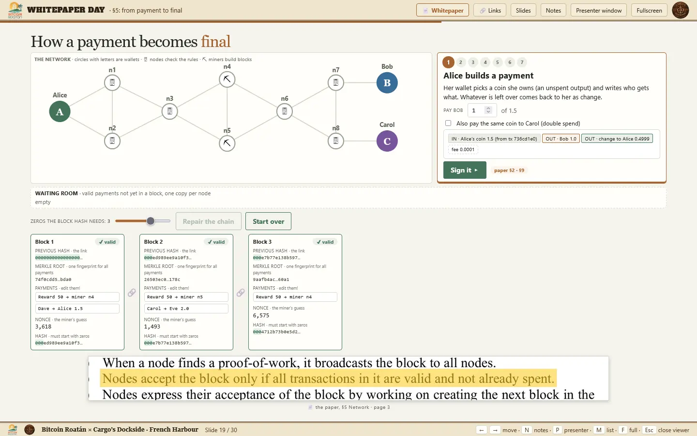
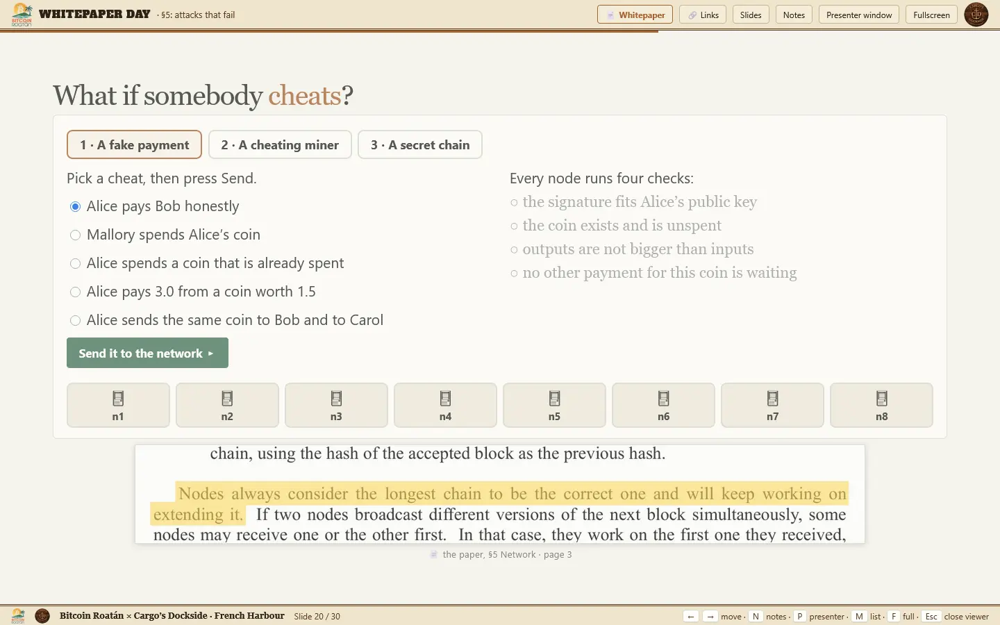

Bitcoin Whitepaper Day · Roatán
Nine pages that started Bitcoin.
Explore Satoshi’s paper, one idea at a time. Follow digital money from its earliest problems to the network that made Bitcoin possible.
▶ Open the deck
Explore the ideas
Thirty illustrated slides, speaker notes and hands-on demonstrations — including a payment’s journey through the network.



Use your arrow keys to navigate. Press N for notes or P for the presenter window.